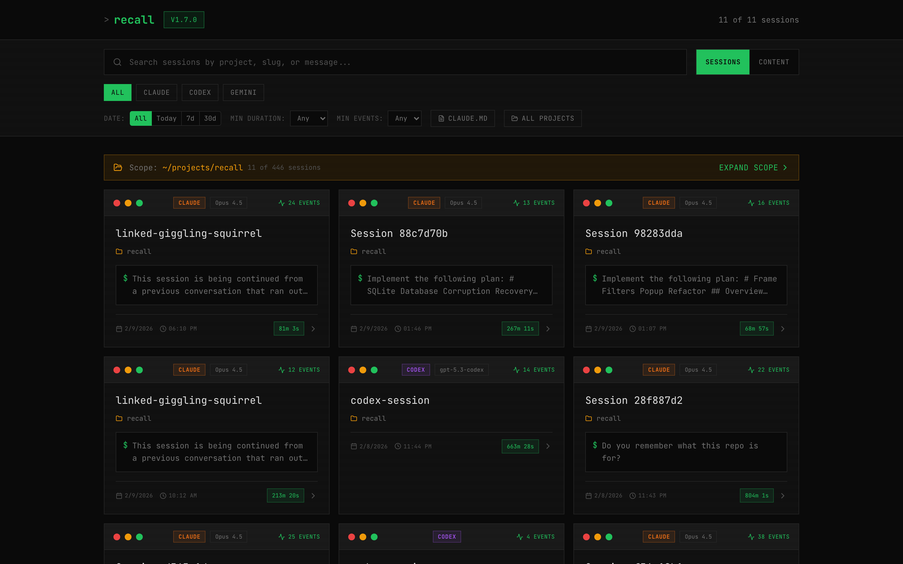
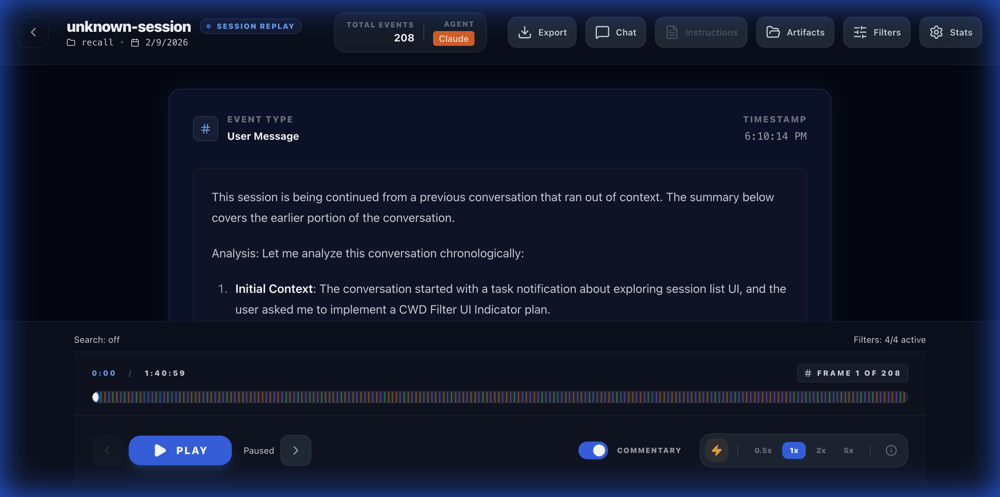

Clear the "AI Fog of War". Investigate exactly how your agents built your features. Replay every thought, every prompt, and every file operation with sub-second precision.
Why did it choose this library? The rationale often disappears with your terminal scrollback. Recall persists the logic.
Small edits in distant files you might have missed. Recall isolates and highlights every single file operation.
Looking back at code a week later and forgetting how the AI reached that solution. Replay the history to regain context.
Using Claude, Gemini, and Codex across projects? Recall correlates all agent activities into unified Work Units.

// Session List - Unified dashboard with deep search and agent filtering.
// Replay Player - Frame-by-frame playback with precise timeline scrubbing.Mission-critical tools to audit and analyze agent behavior
Scrub through sessions with variable speeds (0.5x to 20x). Automated dead-air compression.
Binary-level tracking of every file operation. Inline syntax-highlighted diffs for every write.
Deep search across all session transcripts via SQLite FTS5. Find discussion points in milliseconds.
Correlate disparate sessions into "Work Units" for a holistic view of feature evolution.
100% local operation. Read-only ingestion ensures no modification of original session evidence.
Full keyboard navigation for investigators. Space, Arrows, Home/End, and specialized filters.
No installation required.
npx recall-player
Access the investigation dashboard.
open http://localhost:3001
Browse, search, replay. Uncover what happened.